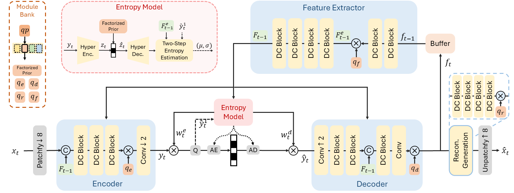

Overview
DCVC-RT is the first neural video codec (NVC) achieving 100+ FPS 1080p coding and 4K real-time coding with a comparable compression ratio with ECM. Beyond high compression ratio and fast coding speed, the primary goal of DCVC-RT is to pursue a more practical neural video codec solution. Currently, DCVC-RT supports several practical features, including:
- Wide bitrate range in single model: A single model enables continuous and controllable bitrate adjustments. DCVC-RT can compress at a wide bitrate range for different coding scenarios.
- Rate control: By adjusting quantization parameters, DCVC-RT effectively supports dynamic and various network conditions during real communication scenario.
- Unified YUV and RGB coding: While DCVC-RT is primarily optimized for the widely adopted YUV format, it can seamlessly adapt to RGB content coding.
Here, we present a visual comparison between DCVC-RT (left) and the real-time GPU-accelerated traditional codec, NVEnc-HEVC (right), using the MCL-JCV video sequences. DCVC-RT demonstrates significantly superior visual quality. Click on the thumbnails to switch between visual examples.
Please expand the video to at least 1080p for better clarity and contrast.
Abstract
We introduce a practical real-time neural video codec (NVC) designed to deliver high compression ratio, low latency and broad versatility. In practice, the coding speed of NVCs depends on 1) computational costs, and 2) non-computational operational costs, such as memory I/O and the number of function calls. While most efficient NVCs prioritize reducing computational cost, we identify operational cost as the primary bottleneck to achieving higher coding speed. Leveraging this insight, we introduce a set of efficiency-driven design improvements focused on minimizing operational costs. Specifically, we employ implicit temporal modeling to eliminate complex explicit motion modules, and use single low-resolution latent representations rather than progressive downsampling. These innovations significantly accelerate NVC without sacrificing compression quality. Additionally, we implement model integerization for consistent cross-device coding and a module-bank-based rate control scheme to improve practical adaptability. Experiments show our proposed DCVC-RT achieves an impressive average encoding/decoding speed at 125.2/112.8 fps (frames per second) for 1080p video, while saving an average of 21% in bitrate compared to H.266/VTM.
Methods
To accelerate NVCs, we rethink the complexity problem in this paper. In practice, both computational complexity (typically measured by the number of multiply-accumulate operations, MACs) and operational complexity (e.g., function calls and memory I/O costs) influence the actual coding speed. While most existing research focuses on computational costs, our experiments illustrate that operational overhead is the primary bottleneck in accelerating NVCs. This insight motivates us to design an NVC that minimizes operational costs. To reduce operational complexity, we first employ implicit temporal modeling to eliminate complex explicit motion modules, reducing the number of modules. Additionally, we use a single low-resolution latent representation instead of progressive downsampling to lower memory I/O costs. These designs significantly simplify our NVC, effectively reducing operational costs and improving speed.
Video Compression Performance
Bit saving over VTM-17.0 (UVG all frames with single intra-frame setting (i.e. intra-period = –1) and YUV420 colorspace.)
The BD-Rate and 1080p encoding/decoding speed on NVIDIA A100 GPU

The complexity analysis and encoding/decoding speed evaluation across various resolutions and devices.
Image Compression Performance
Notably, the intra-frame codec in DCVC-RT also delivers impressive performance. On Kodak, DCVC-RT-Intra achieves an 11.1% bitrate reduction compared to VTM, with a over 10× faster decoding speed than previous state-of-the-art learned image codecs. For encoding, DCVC-RT-Intra also offers a similar speed advantage. For 1080p content, DCVC-RT-Intra achieves an impressive encoding/decoding speed of 40.7 FPS / 44.2 FPS on an NVIDIA A100 GPU.
Citation
If you find this work useful for your research, please cite:
@inproceedings{jia2025towards,
title={Towards Practical Real-Time Neural Video Compression},
author={Jia, Zhaoyang and Li, Bin and Li, Jiahao and Xie, Wenxuan and Qi, Linfeng and Li, Houqiang and Lu, Yan},
booktitle={{IEEE/CVF} Conference on Computer Vision and Pattern Recognition,
{CVPR 2025}, Nashville, TN, USA, June 11-25, 2024},
year={2025}
}